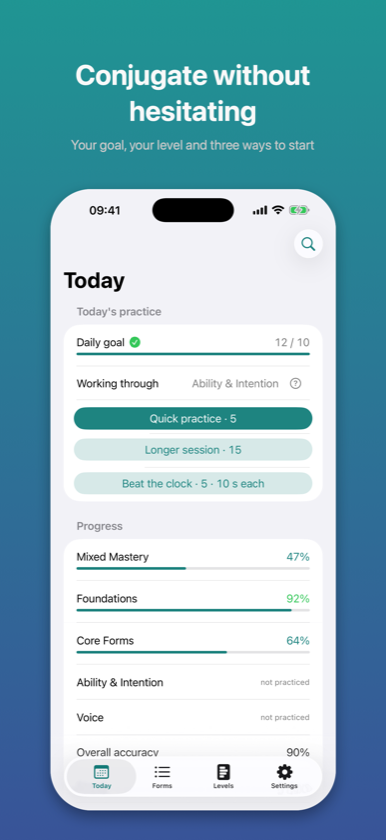
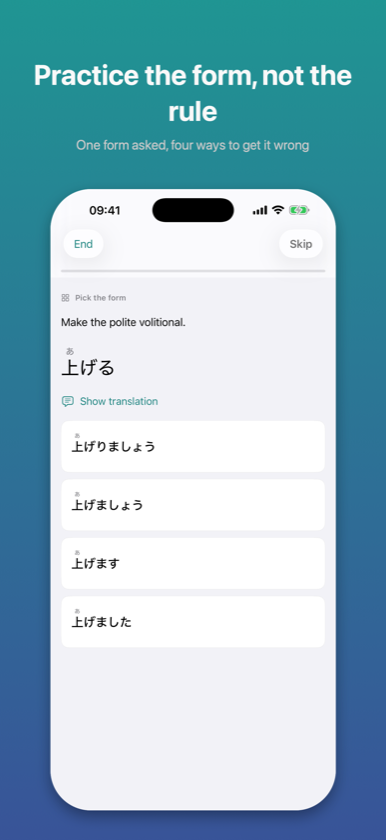
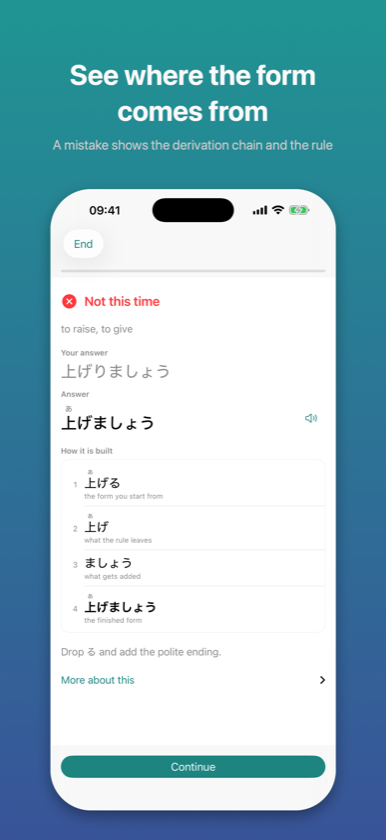

Japanese Forms & Drills
App Store →Free app with an in-app purchase
Verb forms come from rules, not from memory. Drill them until 書いて arrives before you have finished thinking about it.



Katsuyokei drills Japanese conjugation until it becomes automatic.
Knowing that the te-form exists is not the same as producing 書いて without stopping to
think. The first is understanding; the second is a reflex, and a reflex is built by
repetition and feedback, not by explanation.
Verb classes — godan, ichidan, and the irregulars. Including the verbs that look like
one class and behave like another: 帰る, 入る, 走る and 切る end in -る and are godan, and
that is exactly where most mistakes live.
Every form you actually need: polite ます forms, the plain negative, the plain past, the
te-form and its sound changes, conditionals, potential, volitional, imperative,
prohibitive, passive, causative, and the causative-passive along with its spoken
contraction. Adjectives too — both kinds, including いい, which stops behaving like an
adjective the moment you negate it.
Pick the right form from four options. Type the form yourself. Name a form you are shown.
Name the conjugation class. Take a conjugated word back to its dictionary form. The app
moves you along that ladder on its own: a form you have just met starts with multiple
choice, because typing something you have never seen is guessing, not practice.
You see the transformation, not a red cross. 書く → 書か + ない → 書かない, with one line
explaining the rule underneath. No paragraphs in the middle of a session.
The distractors are the mistakes learners actually make. Practice the te-form of 帰る and
you will be offered 帰て — the answer you would give if you thought it were an ichidan
verb.
Three lucky answers do not show mastery, and five hundred wrong ones do not either.
Progress is measured per form and per verb class separately, because the te-form of an
ichidan verb and the te-form of a godan verb ending in ぐ are not the same skill.
Sessions lean towards whatever you keep getting wrong.
Five questions by default, fifteen in a longer session. A minute or seven, one tap
from opening the app. No setup, no
daily quota to configure, no streak to protect at midnight — the streak survives a missed
evening and breaks after a missed day.
Interface and content switch independently, so a Polish menu with English grammar terms
is a normal combination rather than a compromise.
Everything stays on your device. No account, no sign-in, no analytics, no advertising, no
tracking. The app makes no network requests at all apart from handling the purchase
itself. It works in aeroplane mode.
Levels 1 and 2 are free in full — enough to reach the te-form, which is the point at
which Japanese starts connecting into sentences. Premium is a single purchase that opens
levels 3 to 5, the full vocabulary pool and weak-form practice. No subscription.
Also from the same author: Kaname — Japanese Grammar, for when and why a construction is
used, rather than how to build it.
The description above is the same text that stands on the App Store product page – it comes from the same file.